Sauípe Premium Brisa
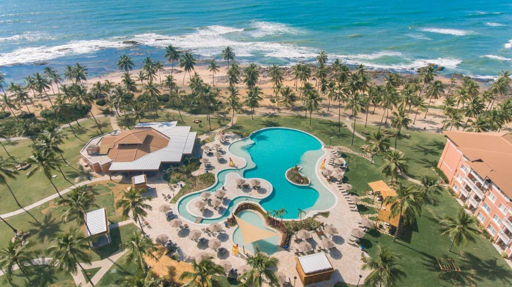
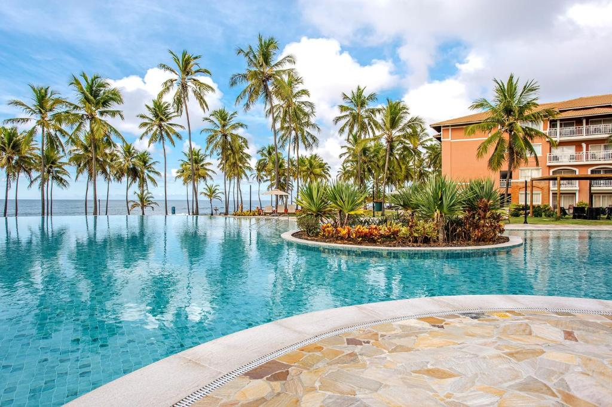
♦ Descrição ♦
Localizado na Costa do Sauípe (BA), a 400 metros da Praia da Costa do Sauípe, o Sauipe Grand Premium Brisa - All Inclusive oferece acomodações com piscina ao ar livre, estacionamento privativo gratuito, academia e jardim.

♦ Localização ♦
O Castelo Garcia D'Ávila fica a 27 km do resort, enquanto o Instituto Baleia Jubarte está a 29 km. O aeroporto mais próximo é o Aeroporto Internacional de Salvador, a 79 km do Sauipe Grand Premium Brisa - All Inclusive.
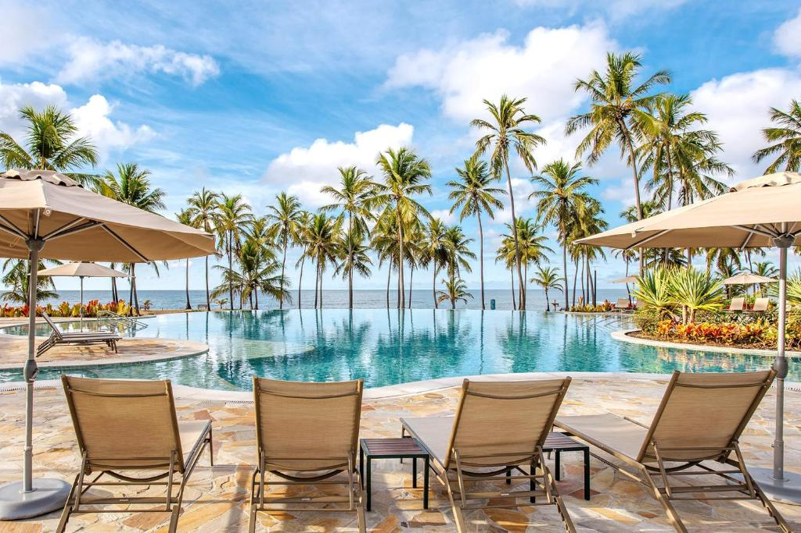
♦ Acomodação♦
Os quartos do resort dispõem de ar-condicionado, área de estar, TV de tela plana a cabo, cofre e banheiro privativo com chuveiro, produtos de banho gratuitos e secador de cabelo. No Sauipe Grand Premium Brisa - All Inclusive, todos os quartos estão equipados com roupa de cama e toalhas.
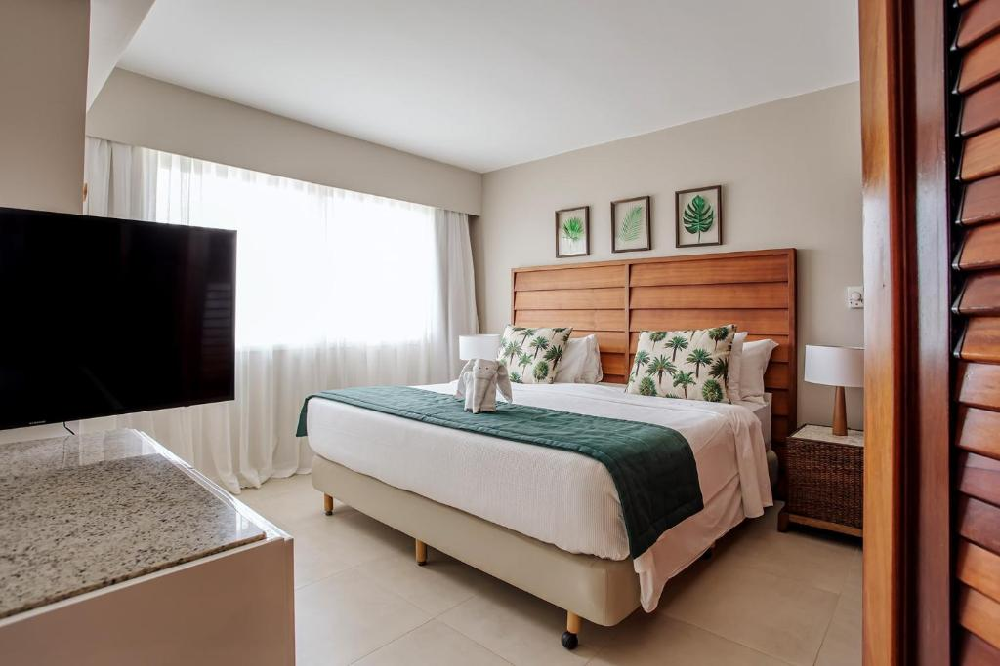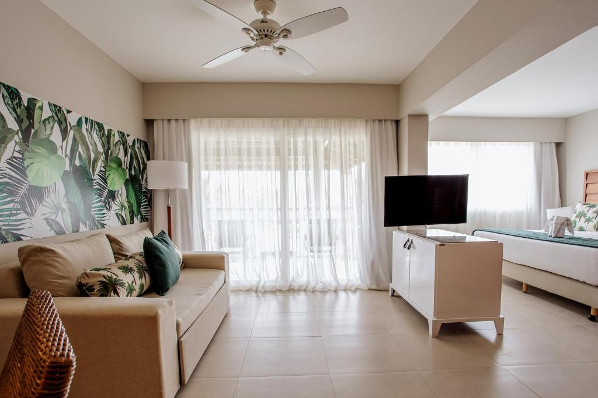
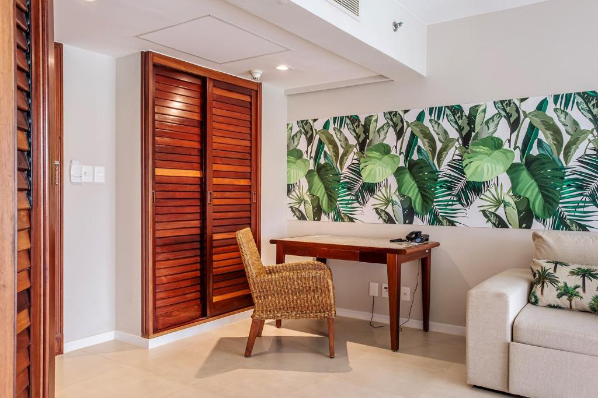
♦ Alimentação ♦
Você pode usufruir de 1 restaurante, que serve pratos brasileiros, aberto para café da manhã, almoço e jantar em um ambiente familiar e moderno.
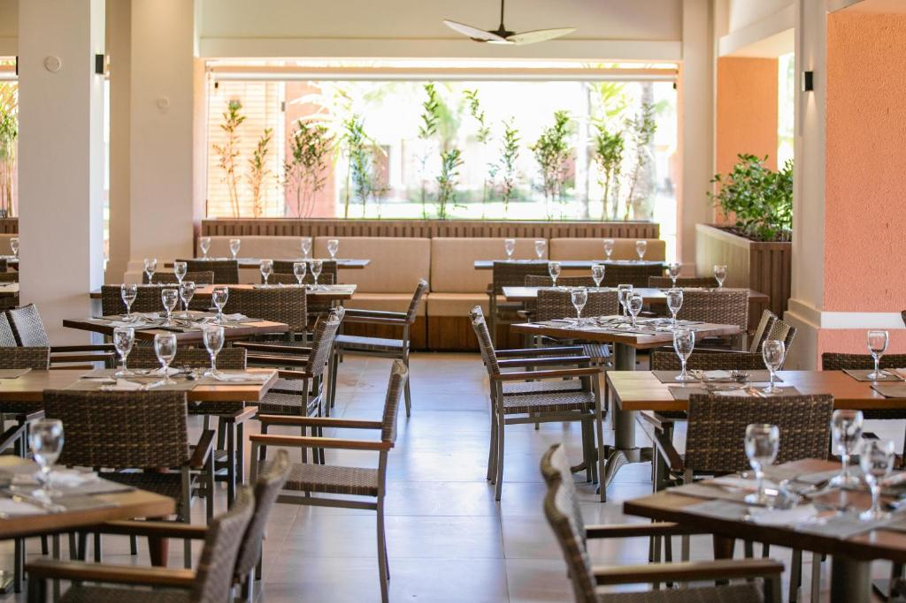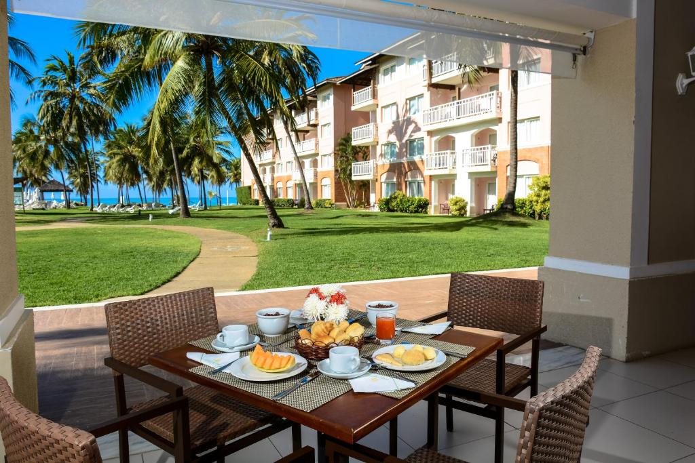
♦ Lazer ♦
O Sauipe Grand Premium Brisa - All Inclusive oferece um terraço. Você pode jogar squash e tênis neste resort 5 estrelas, e a área é famosa para trilhas a pé e ciclismo. A propriedade oferece restaurante, Espaço Kids, serviço de quarto e Wi-Fi gratuito em todas as áreas. A acomodação oferece entretenimento noturno e recepção 24 horas.
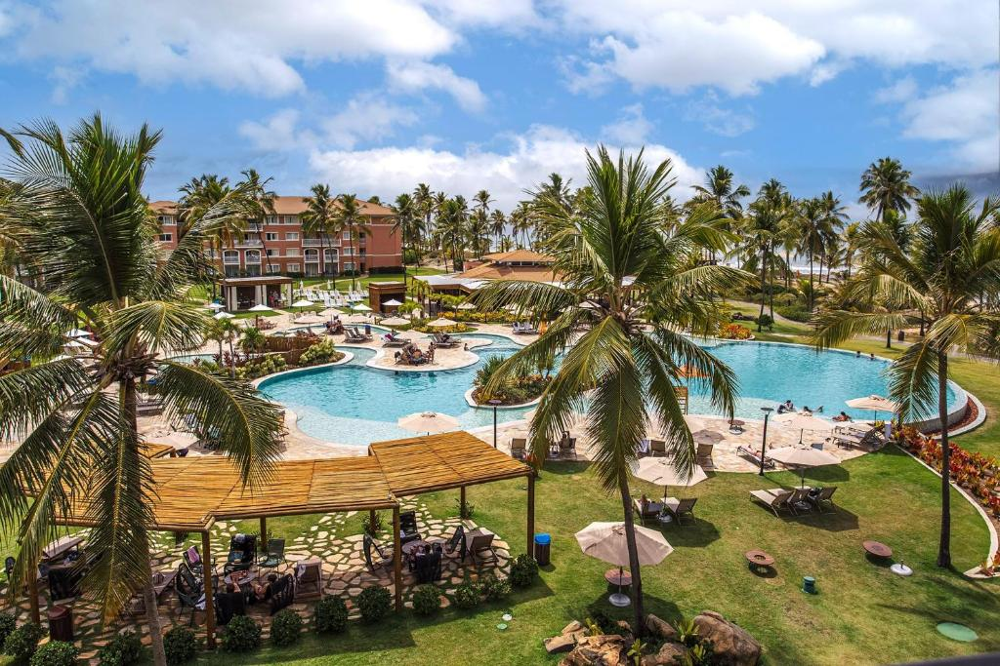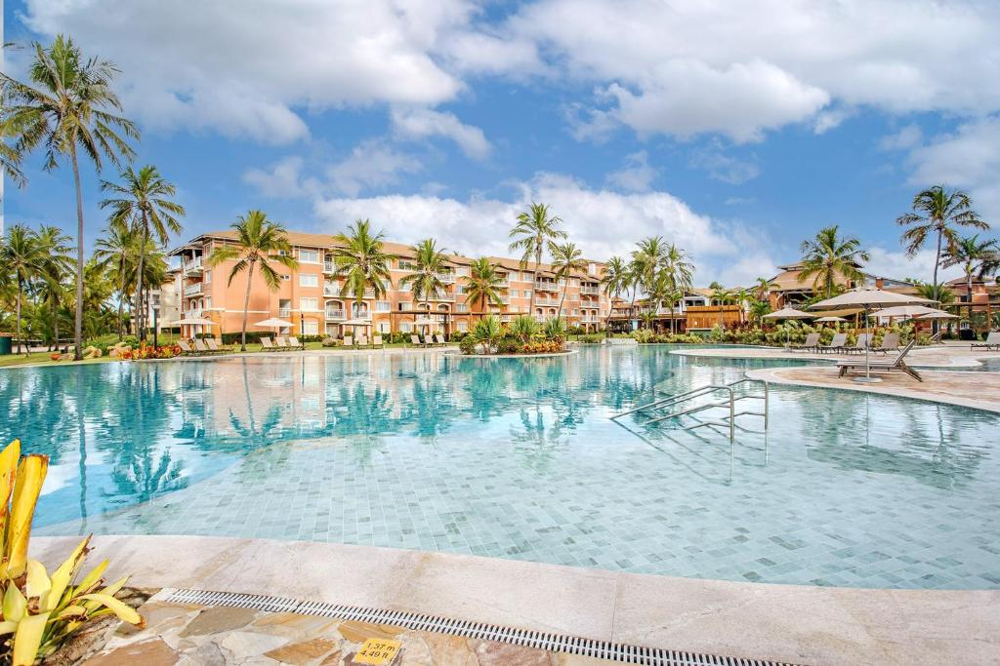
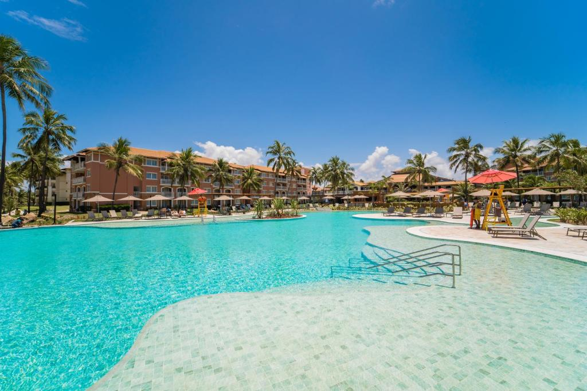
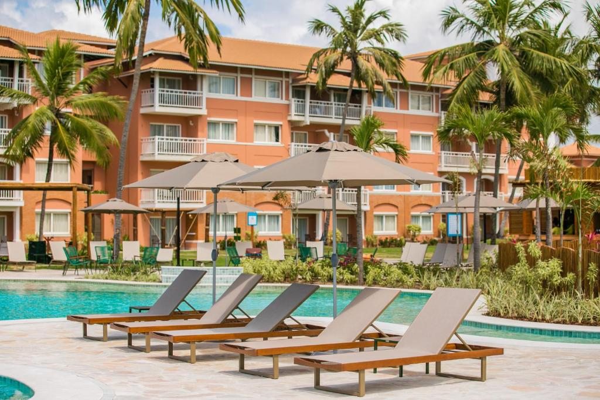
♦ Reservas ♦
Entradas a partir das 15h.
Saída até 12h.
Cancelamento/pré-pagamento: As políticas de cancelamento e pré-pagamento variam de acordo com o tipo de acomodação.
Políticas para crianças: Crianças de qualquer idade são bem-vindas. Crianças com 12 anos ou mais são consideradas adultos nesta acomodação. Para ver os preços e as informações de ocupação certos, informe quantas crianças fazem parte do seu grupo e a idade delas.
A idade mínima para check-iné 18.
Animais não são permitidos.